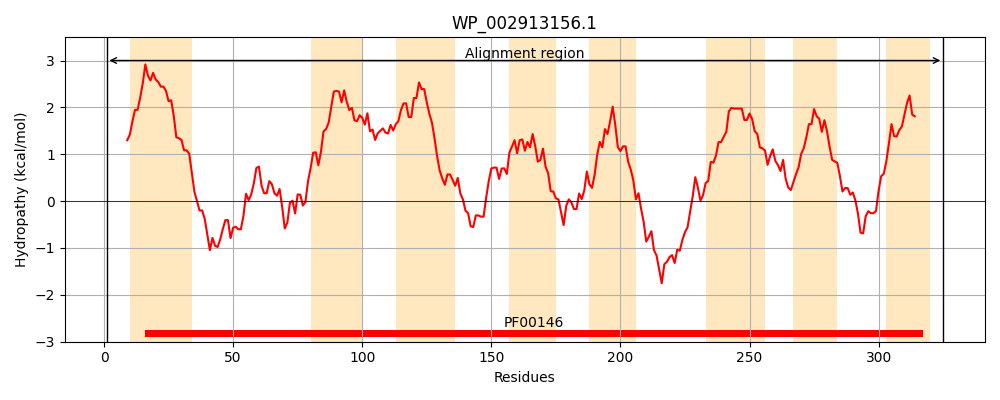
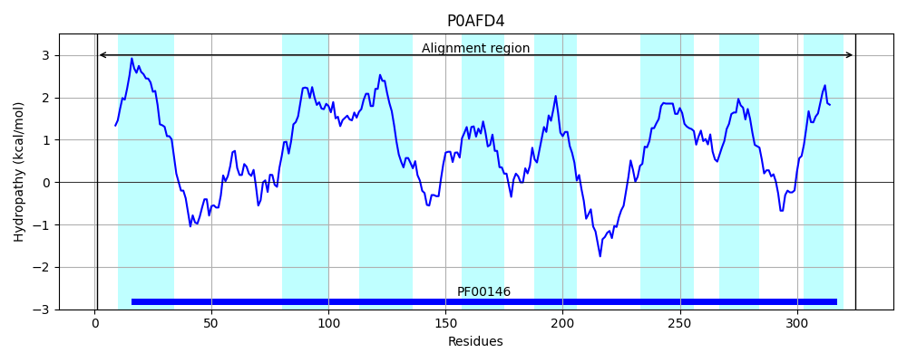
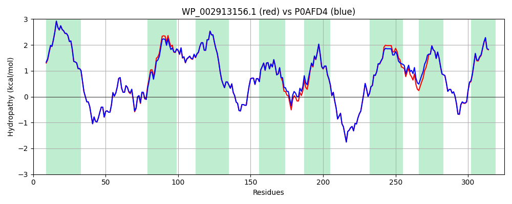

Hit Accession: P0AFD4
Hit TCID: 3.D.1.1.1
Hit Description: gnl|BL_ORD_ID|8815 gnl|TC-DB|P0AFD4|3.D.1.1.1 NADH-quinone oxidoreductase subunit H - Escherichia coli.
Mach Len: 325
e:0.000000
Query TMS Count : 8
Hit TMS Count: 8
TMS-Overlap Score: 8.400000
Predicted Substrates:CHEBI:5584;hydron
BLAST Alignment:
Score: 1629 , Bit scores: 632 bits, E-value: 0.0e+00, Alignment length: 325, Percentage identity: 95
Query: 1 MSWLTPDLIDILLSILKAVVILLVVVTCGAFMSFGERRLLGLFQNRYGPNRVGWGGSLQLVADMIKMFFKEDWIPRFSDRVIFTLAPVIAFTSLLLAFAIVPVSPTWVVADLNIGILFFLMMAGLAVYAVLFAGWSSNNKYSLLGAMRASAQTLSYEVFLGLSLMGVVAQAGSFNMTDIVNNQAHLWNVIPQFFGFVTFAIAGVAVCHRHPFDQPEAEQELADGYHIEYSGMKFGLFFVGEYIGIVTVSALIVTLFFGGWNGPWLPPFIWFALKTAFFMMMFILIRASLPRPRYDQVMSFGWKVCLPLTLVNLLVTAAVILWQAQ 325
MSW++P+LI+ILL+ILKAVVILLVVVTCGAFMSFGERRLLGLFQNRYGPNRVGWGGSLQLVADMIKMFFKEDWIP+FSDRVIFTLAP+IAFTSLLLAFAIVPVSP WVVADLNIGILFFLMMAGLAVYAVLFAGWSSNNKYSLLGAMRASAQTLSYEVFLGLSLMGVVAQAGSFNMTDIVN+QAH+WNVIPQFFGF+TFAIAGVAVCHRHPFDQPEAEQELADGYHIEYSGMKFGLFFVGEYIGIVT+SAL+VTLFFGGW GP LPPFIWFALKTAFFMMMFILIRASLPRPRYDQVMSFGWK+CLPLTL+NLLVTAAVILWQAQ
Sbjct: 1 MSWISPELIEILLTILKAVVILLVVVTCGAFMSFGERRLLGLFQNRYGPNRVGWGGSLQLVADMIKMFFKEDWIPKFSDRVIFTLAPMIAFTSLLLAFAIVPVSPGWVVADLNIGILFFLMMAGLAVYAVLFAGWSSNNKYSLLGAMRASAQTLSYEVFLGLSLMGVVAQAGSFNMTDIVNSQAHVWNVIPQFFGFITFAIAGVAVCHRHPFDQPEAEQELADGYHIEYSGMKFGLFFVGEYIGIVTISALMVTLFFGGWQGPLLPPFIWFALKTAFFMMMFILIRASLPRPRYDQVMSFGWKICLPLTLINLLVTAAVILWQAQ 325 | Protein Hydropathy Plots: |
|---|
|  |  |
Pairwise Alignment-Hydropathy Plot:
|
|---|
|  |